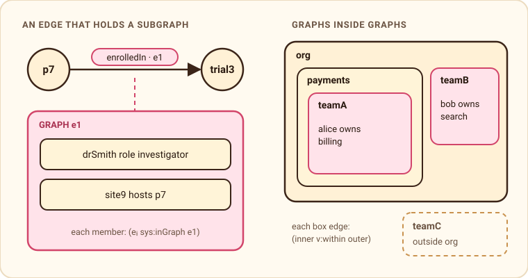

Metagraphs from one row shape
A metagraph has two powers. Edges are vertices: a relationship can be the subject or object of another relationship, to any depth. Vertices are containers: a vertex can hold a whole subgraph, and so can an edge. Agent memory needs both. A conversation holds the facts said in it. A project holds teams, which hold people and the services they own. An enrollment is an edge between a patient and a trial, and it has its own investigator and site.
Tiramemsu gets both from the same two things: a statement row that has an address, and a layer statement that tags that address into a graph. There is no second table, id space or query language. Every query below runs in the test suite (metagraph_containers_nesting_and_fold in crates/tiramemsu/tests/recipes.rs).
A short definition
Basu and Blanning define a metagraph as a set of elements and a set of metaedges, where a metaedge links a set of elements to a set of elements and can itself be an element. Gapanyuk's annotated metagraph lets metavertices and metaedges carry annotations that are themselves metagraphs. Goertzel adds two operations: unfold opens a metavertex into the subgraph it stands for, and fold collapses a subgraph into one metavertex. The book Metagraph for AI Agents calls the reason for all this the hypergraph wall: a hyperedge connects many things, but it is a connection, not a thing, so nothing can be said about it.
Power one: edges are vertices
Every fact is a row (eid, s, p, o), and the eid can stand anywhere a node can. Confidence, sources and beliefs are statements whose subject or object is another statement. Layered graphs, explained covers this part. In Cypher the same eid is both a relationship and a node:
MATCH (a)-[r:worksAt]->(c), (b:Belief)-[:supportedBy]->(r)
RETURN a, c, r.confidence, bPower two: containers
A named graph in tiramemsu is a tag, not a box. Membership is one more layer statement on a fact's eid, (e sys:inGraph g). One fact keeps one eid however many graphs hold it, so its confidence belongs to the fact, and removing it from a graph never deletes it. Read as a metagraph, a named graph is already a metavertex: a node with statements tagged into it.
The graph name can be a node or a statement. So an edge can hold a subgraph of its own:

e1 names a graph. Right: graphs nested by ordinary v:within statements.INSERT DATA { v:p7 v:enrolledIn v:trial3 } # gets eid 1
INSERT DATA { GRAPH <urn:tiramemsu:stmt:1> {
v:drSmith v:role v:investigator . v:site9 v:hosts v:p7 } }
# open the edge through its reifier
SELECT ?s WHERE { v:p7 v:enrolledIn ?trial ~ ?e . GRAPH ?e { ?s ?p ?o } }From Rust it is tx.add_to_graph(member, edge_eid, AssertOpts::default()). The container follows the edge's life:
- Retract the edge and every membership in its graph is retracted in the same transaction. The facts inside stay. The container is gone, not its contents.
- Correct the edge with
supersede(say the trial id was a typo) and the contents move to the new version. The members keep their ids. - A retracted edge cannot gain new contents: the write fails with
NotLive.
Before this, the usual workaround was a context node: tag the edge with v:context v:enroll1 and put the contents in GRAPH v:enroll1. That works, but the stand-in can drift from the edge it stands for, and a correction of the edge does not carry it along.
Metavertices inside metavertices
Nesting needs nothing special. It is an ordinary statement between two graphs, so "everything owned anywhere under the org" is a path that finds the metavertices and a GRAPH block that opens them:
INSERT DATA {
GRAPH v:teamA { v:alice v:owns v:billing }
GRAPH v:teamB { v:bob v:owns v:search }
GRAPH v:teamC { v:carol v:owns v:ads }
v:teamA v:within v:payments . v:payments v:within v:org . v:teamB v:within v:org }
SELECT ?who WHERE { ?g v:within* v:org . GRAPH ?g { ?who v:owns ?svc } }That returns Alice (two levels down) and Bob (one level down), not Carol. A cycle such as v:org v:within v:payments does not change the answer, because the path engine keeps a visited set. Cypher reaches the same memberships through the dual view:
MATCH (a)-[r:owns]->(b), (r)-[:`sys:inGraph`]->(g)-[:within*0..]->(top {`@id`: 'v:org'})
RETURN DISTINCT a, gA variable-length Cypher match returns one row per path, so a cyclic nesting needs DISTINCT. SPARQL's * already gives each node once.
Edges between sets
A metaedge links a set to a set, and a hyperedge links many members at once. Rows in tiramemsu have exactly two ends, so the relationship becomes a thing and its ends become role statements on it. When the relationship is the main thing, use a node:
INSERT DATA {
v:m1 a v:Meeting ; v:participant v:alice, v:bob, v:carol ; v:decided v:d1 .
v:me1 v:from v:alice, v:bob ; v:to v:ads, v:search . # a set-to-set metaedge
v:m1 v:causes v:me1 } # a metaedge between metaedgesWhen there is a natural binary core, the edge itself carries the extra ends, and gets the edge's lifetime and cascade for free:
INSERT DATA { v:alice v:meets v:bob {| v:with v:carol ; v:with v:dave |} }
SELECT ?x WHERE { ?a v:meets ?b ~ ?e . ?e v:with ?x }A typed layer, (v:with sys:subjectType sys:STMT), makes the store refuse a role written on a plain node by mistake. Content-addressed hyperedges, where the id is a hash of the members, were rejected on purpose: they cannot say the same meeting happened twice.
Fold and unfold
With graphs as tags, both operations are plain writes and reads. Fold tags existing statements into a new metavertex. Assert is idempotent, so nothing is copied, and the three ownership facts below are still three facts, each now in its team's graph and in the episode:
INSERT { GRAPH v:episode1 { ?s v:owns ?o } . v:episode1 v:summarizes "who owns what" }
WHERE { ?s v:owns ?o }Unfold opens it. Add View::dependents(e) per member to bring the layers and the beliefs that cite it:
SELECT ?s ?p ?o WHERE { GRAPH v:episode1 { ?s ?p ?o } }The structure has two clocks
Containment, nesting and roles are all statements, so they all have transaction time and valid time. After team B moves out from under the org, the deep query returns only Alice. As of the transaction before the move, it still returns both:
DELETE DATA { v:teamB v:within v:org }
SELECT ?who WHERE {
SERVICE <urn:tiramemsu:tm:asOf/150> { ?g v:within* v:org . GRAPH ?g { ?who v:owns ?svc } } }Give the nesting a valid-time interval and FROM <urn:tiramemsu:tm:validAt/2024-06-01> answers "which teams were under the org in June 2024", whenever that was recorded. A time-respecting path over v:within+ never steps into a nesting that had already ended. A memory that remembers being wrong about a fact also remembers being wrong about a structure.
What tiramemsu does not do
- An edge as a predicate. The predicate is always an IRI. A role statement says the same thing without changing the indexes or the Cypher and RDF name mapping.
- Containers that own their contents. A fact in two graphs stays one fact with one confidence.
- Deep graph selectors and metavertex bundles are not built yet. Today a
within*path does the first, and one fact bundle per member does the second.
The design notes are in lat.md/data-model.md (Named Graphs, Statement Graphs) and lat.md/recipes.md (Metagraphs).